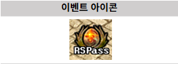
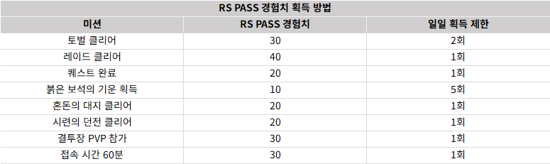
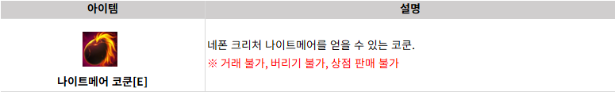
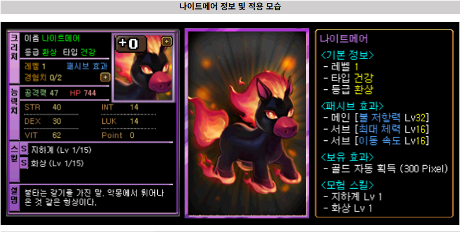
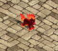
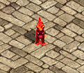
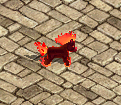
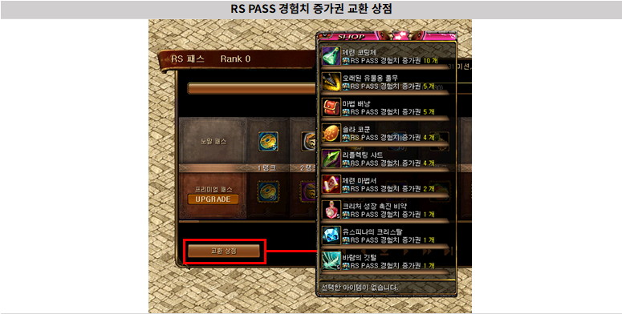
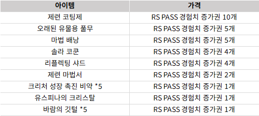

メニュー
韓国 2026/01 RS PASS シーズン19
[重要！] 韓国公式の情報を基にしています。
誤訳や韓国独自仕様の可能性もありますので、予めご了承下さい。
こんにちは。
冒険家の皆様、REDSTONEです。
1月28日（月）より行われるRS PASSシーズン19をご案内し、
冒険者の皆様はゲーム利用に参考にしてください。
RS PASSシーズン19のご案内
RS PASSシーズン19は、 ゲーム内のミニマップの左側のRS PASSアイコンとして参加可能です。
＊アカウント内100レベル以上のキャラクターでのみ参加可能です。
＊RS PASS報酬はシーズン期間内に直接クリックして受け取る必要があり、シーズン終了後は報酬を受けることができません。

RS PASS経験値取得方法
RS PASS経験値は 1日最大130経験値 まで獲得が可能です。

＊RS PASS経験値獲得はサーバごとに獲得可能です。RS PASSアップグレードと報酬ガイド
RS PASSの報酬は、アカウントごとに一度だけ獲得できます。
プレミアム報酬は、RS PASSアップグレード券を適用したサーバーにのみ適用されます。
（アカウントごとに1回の購入制限で同じアカウントを使用する他のサーバーではプレミアム報酬を受け取ることはできません。）
| RS PASSアップグレード券 商品案内 | |||
|---|---|---|---|
| アイテム | 価格 | 情報 | 購入制限 |
| RS PASSアップグレード券 | 29,800ウォン | RS PASSプレミアム報酬追加獲得可能。購入時'10 Rank'まで報酬即時支給 | アカウント当たり1回 |
例）10 RankからRS PASSアップグレード券を使用する場合 20 Rankで適用
＊RS PASSアップグレード券はアカウントごとに1個のみ購入が可能です。
＊[ショップ]からのみ購入できます。
＊カートからインベントリにアイテムを移動する場合、申請の撤回を進めることはできません。
| RS PASSシーズン19 ランク別報酬 | ||
|---|---|---|
| RANK | ノーマル報酬 | プレミアム報酬 |
| 1 | 新鮮なパインベリー × 1 | アップルマンゴーベリー × 5 |
| 2 | 位相錬成一般触媒 × 1 | 位相錬成高級触媒 × 2 |
| 3 | 冒険団コイン × 25 | ファストフルヒーリングポーション(E) × 5 |
| 4 | 多次元の結晶 × 15 | 完全復活スクロール × 3 |
| 5 | 精製された実録の魔石 × 2 | 精製された実録の魔石 × 8 |
| 6 | 魔力の粉 × 5 | 魔力の粉 × 25 |
| 7 | 古代茂みコイン × 5 | 古代茂みコイン × 30 |
| 8 | 異界の強化石 × 3 | 黒い異界の強化石 × 1 |
| 9 | 最下級ミルの鱗 × 1 | 下級ミルの鱗 × 1 |
| 10 | 封印解放スロット集中加工道具箱[E] × 1 | 封印解放スロット集中加工道具箱[S][E] × 1 |
| 11 | 力の水光石 × 10 | クリーチャー成長促進秘薬[E] × 20 |
| 12 | 知識の水光石 × 10 | クリーチャー経験値結晶(大型)[E] × 5 |
| 13 | 健康の水光石 × 10 | クリーチャーメダル[E] × 1 |
| 14 | サポートの水光石 × 10 | 水光石選択袋[E] × 2 |
| 15 | セレーネコクーン[E] × 1 | ヘリオスコクーン[E] × 1 |
| 16 | ネポンクリーチャーコイン × 10 | 混沌の欠片 × 50 |
| 17 | ネポンクリーチャー経験値霊薬(小) × 2 | ネポンクリーチャー経験値霊薬(大) × 4 |
| 18 | ネポンクリーチャーの精髄(中) × 1 | ネポンクリーチャーの精髄(大) × 1 |
| 19 | 覚醒石 × 10 | 赤い覚醒石 × 8 |
| 20 | レプリカ携帯用封印解放道具箱[E] × 1 | 改善された携帯用封印解放道具箱 × 1 |
| 21 | 新鮮なパインベリー × 1 | アップルマンゴーベリー × 5 |
| 22 | 位相錬成一般触媒 × 1 | 位相錬成高級触媒 × 2 |
| 23 | 冒険団コイン × 25 | ファストフルヒーリングポーション(E) × 5 |
| 24 | 多次元の結晶 × 15 | 完全復活スクロール × 3 |
| 25 | 精製された実録の魔石 × 2 | 精製された実録の魔石 × 8 |
| 26 | 魔力の粉 × 5 | 魔力の粉 × 25 |
| 27 | 古代茂みコイン × 5 | 古代茂みコイン × 30 |
| 28 | 異界の強化石 × 3 | 黒い異界の強化石 × 1 |
| 29 | 最下級ミルの鱗 × 1 | 下級ミルの鱗 × 1 |
| 30 | 下級ミルの鱗 × 1 | ミルの鱗 × 1 |
| 31 | 力の水光石 × 10 | クリーチャー成長促進秘薬[E] × 20 |
| 32 | 知識の水光石 × 10 | クリーチャー経験値結晶(大型)[E] × 5 |
| 33 | 健康の水光石 × 10 | クリーチャーメダル[E] × 1 |
| 34 | サポートの水光石 × 10 | 水光石選択袋[E] × 2 |
| 35 | セレーネコクーン[E] × 1 | プリズムコクーン × 1 |
| 36 | ネポンクリーチャーコイン × 10 | 混沌の欠片 × 50 |
| 37 | ネポンクリーチャー経験値霊薬(小) × 2 | ネポンクリーチャー経験値霊薬(大) × 4 |
| 38 | ネポンクリーチャーの精髄(中) × 1 | ネポンクリーチャーの精髄(大) × 1 |
| 39 | 覚醒石 × 10 | 赤い覚醒石 × 8 |
| 40 | 紅炎のスクロール × 5 | 位相錬成高級触媒 × 5 |
| 41 | 古代茂みコイン × 5 | 古代茂みコイン × 30 |
| 42 | 精製された実録の魔石 × 2 | 精製された実録の魔石 × 8 |
| 43 | レプリカ携帯用封印解放道具箱[E] × 1 | 魔法が宿った鍛冶屋の金床 × 1 |
| 44 | 封印解放スロット集中加工道具箱[E] × 1 | 魔法が宿った鍛冶屋のハンマー × 1 |
| 45 | レプリカ封印解放オプション変換機[E] × 1 | 魔法が宿った鍛冶屋のトング × 1 |
| 46 | 精錬コーティング剤[E] × 1 | 精錬コーティング剤2[E] × 1 |
| 47 | 最下級ミルの鱗 × 1 | 下級ミルの鱗 × 1 |
| 48 | 不滅性炎研磨剤[E] × 1 | 武器職人の携帯用道具箱[E] × 1 |
| 49 | 黒い異界の強化石 × 1 | 白い異界の強化石 × 1 |
| 50 | ミルの鱗 × 1 | ナイトメアコクーン[E] × 1 |


ナイトメア（スタンバイ）
ナイトメア（立ちポーズ）
ナイトメア（移動）
RS PASS経験値増加券 利用可能期間
| アイテム | 価格 | 情報 | 購入制限 |
|---|---|---|---|
| RS PASS経験値増加券 | 500ウォン | RS PASSの経験値が10増加します。RS PASS交換ショップで使用可能です。 | なし |
＊期間外は購入できません。
RS PASS経験値増加券 交換ショップ 利用可能期間
RS PASS経験値増加券を使用後、RS PASSランク報酬をランクボーナスとして受け取ることができます。

RS PASS経験値増加券 交換ショップ商品一覧
[引用元] 韓国公式ページ